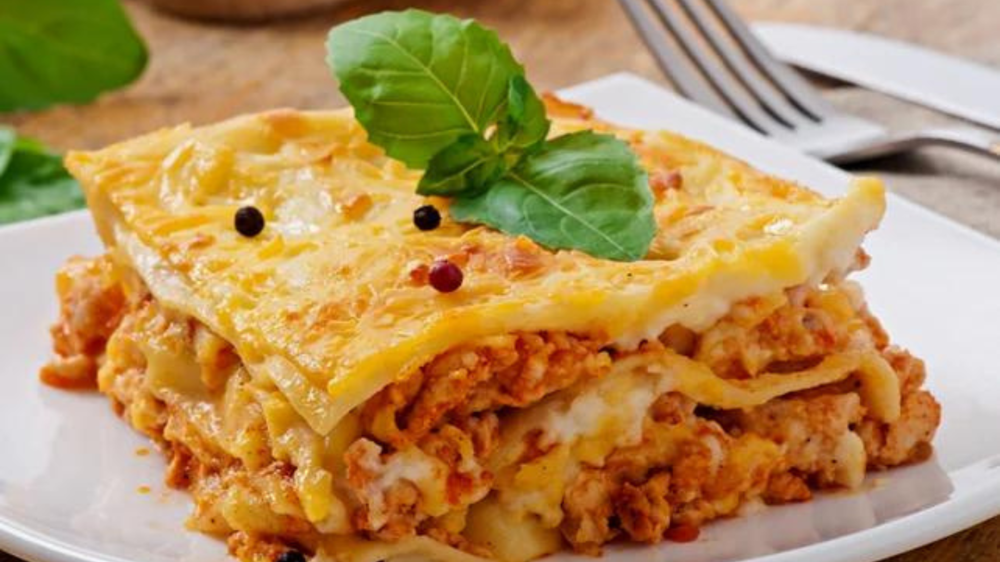
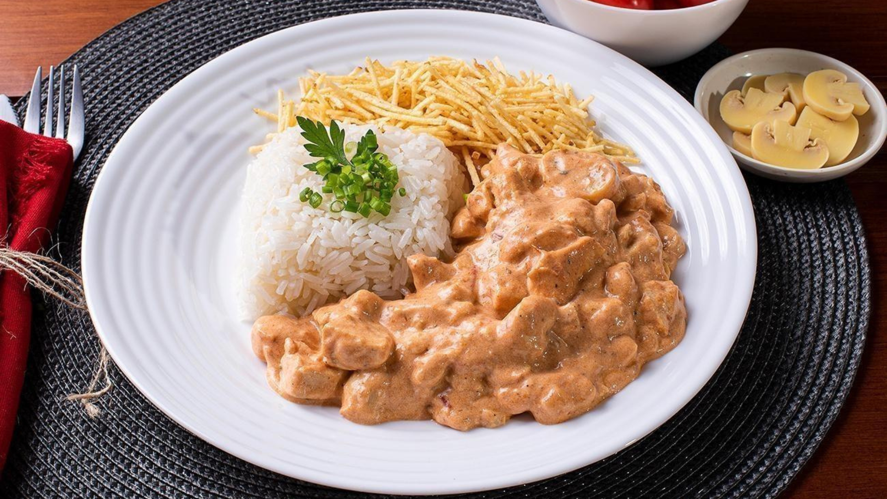
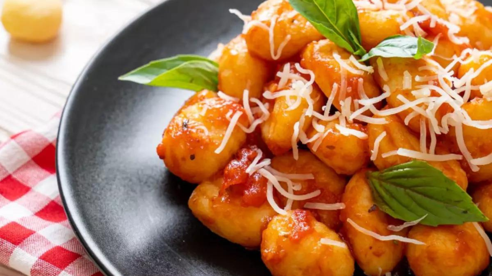

Almoço
Lasanha Tradicional

Ingredientes
- 1 massa de lasanha (pronta)
- 500 g de presunto
- 500 g de queijo mussarela
- 500 g carne moída
- 1 massa de tomate pronta
- sal a gosto
- pimenta-do-reino a gosto
- orégano a gosto
Modo de Preparo
- Cozinhe a massa da lasanha em aproximadamente em 2 litros de água por 5 minutos.
- Em uma panela cozinhe a carne moída, depois de cozida coloque molho de tomate, o sal e temperos a gosto.
- Comece montando com uma camada de molho, a massa da lasanha, o presunto e o queijo
- Faça esse processo até tudo terminar.
- Aqueça o forno a 180º C durante 5 minutos.
- Coloque a lasanha no forno de 20 a 30 minutos.
Stroganoff de Carne

Ingredientes
- 400 gramas de filé mignon cortado em tiras
- 1 colher (chá) de sal
- 1/2 colher (chá) de pimenta-do-reino preta em pó
- 2 colheres de sopa de azeite de oliva extra virgem
- 1/2 cebola picada
- 6 colheres de sopa de Ketchup
- 2 colheres de sopa de molho inglês
- 1 xícara de chá de cogumelos em conserva cortado em quatro partes
- 500 ml de creme de leite fresco
Modo de Preparo
- Tempere a carne com parte do sal e pimenta do reino.
- Em uma panela coloque o azeite e deixe aquecer. Doure as tiras de carne (coloque pequenas porções de carne na panela e evite mexer ao máximo para não juntar água). Reserve.
- Na mesma panela, refogue a cebola picada. Volte a carne e coloque o Ketchup Hellmann's Tradicional, o molho inglês e o champignon e mexa mais um pouco.
- Por último, coloque o creme de leite fresco e ajuste o tempero com sal e pimenta do reino.
Nhoque de Frango

Ingredientes
Molho
- 1 embalagem de Bacon em cubos(140g)
- 1 colher (sopa) de manteiga sem sal
- 1 cebola descascada e cortada em cubos pequenos
- 2 palitos de queijo coalho cortados em cubos médios
- 2 colheres (sopa) de coentro picado
Nhoque
- 2 xícaras (chá) de mandioquinha descascada, cozida e amassada
- 1 ½ xícara (chá) de farinha de trigo
- 1 ovo
- Água fervente
- Sal a gosto
Modo de Preparo
- Noque: Em um recipiente, misture a mandioquinha, a farinha de trigo, o ovo e o sal, até formar uma massa homogênea; se necessário adicione mais farinha para dar ponto (a massa deve desgrudar dos dedos);
- Sobre uma superfície enfarinhada, faça cordões com pequenas porções de massa e corte cada um em pedaços de cerca de 2 cm;
- Cozinhe os nhoques em água fervente com sal. Quando começarem a boiar, retire-os da água e transfira para um refratário.
- Molho: Em uma panela, derreta a margarina e doure o bacon. Quando estiver crocante, adicione a cebola e refogue;
- Acrescente o queijo coalho e o coentro. Espalhe o refogado sobre o nhoque e sirva.